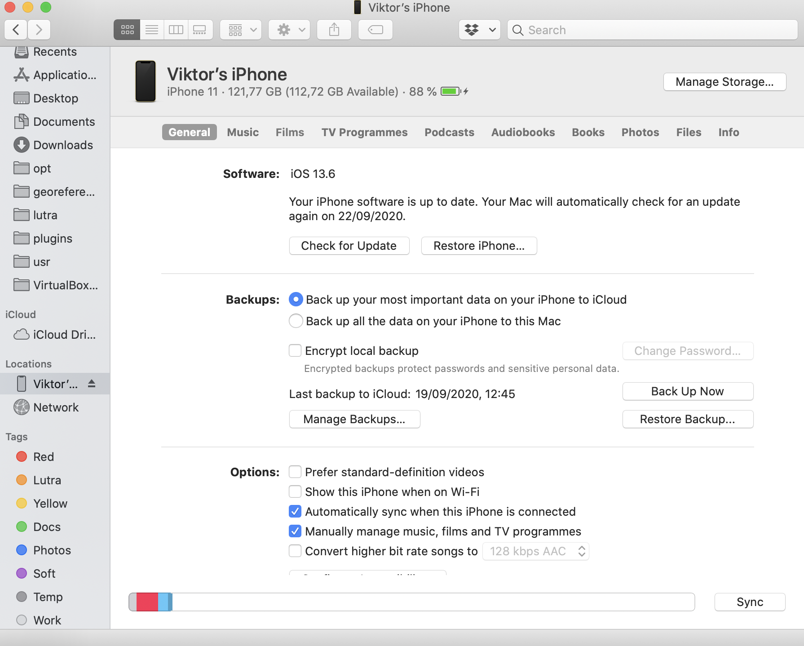

Data/project transfer
Using Mergin
Input comes with built-in functionality to seamlessly synchronise your projects and data through Mergin. If you want to use this functionality, you will need to sign up to Mergin https://public.cloudmergin.com/.
We provide a QGIS plugin for Mergin to easily synchronise your projects and data from within QGIS. See the plugin user manual for more information.

You can also drag-and-drop your project folder (including layers, SVGs, etc) to Mergin project webpage.
Manual data/project transfer
Android
This can be done by connecting your mobile device to the computer and copying data files to/from the device.
Once your Android phone or tablet is recognized by the operating system after connecting it using USB cable,
you can use file browser to copy files. On Android devices, data are stored in Internal storage/Android/data/uk.co.lutraconsulting/files/projects directory.
iOS
Input supports iTunes file sharing. Note that iTunes doesn’t allow you to browse or edit data from the app data folder, only allows you to delete or copy data folder to another location. Instructions to access your data are following:
- Plug iOS device to a computer
- Open
Finderfile browser - Go to Locations ->
<device_name> - Click on the tab named
files - Select
Inputapp from a list to see a data folder - Drag-and-drop the INPUT` folder to another location to see the content